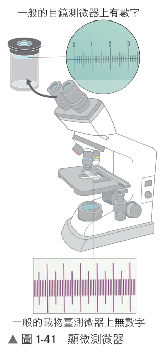
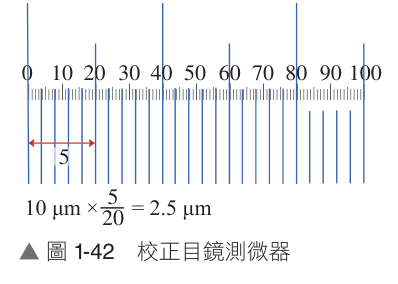
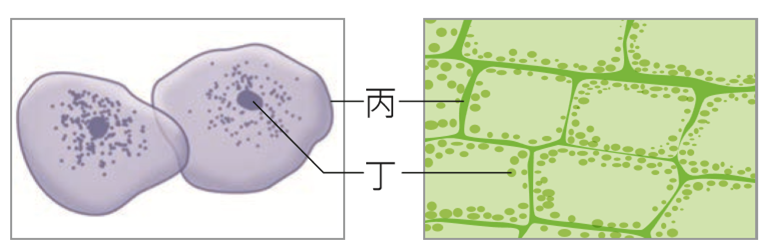
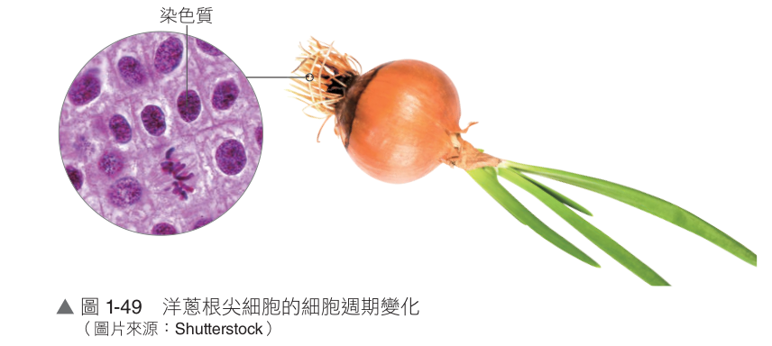
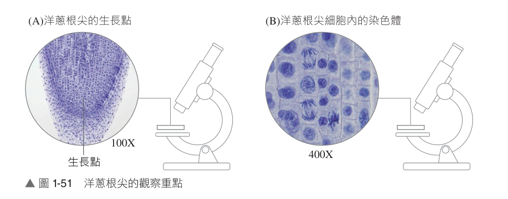

探討活動 1-1如何測量生物的微小構造？
── 顯微測量技術 ──
💡 提問與思考
生物的細胞及胞器等微小構造，大多需要藉助顯微鏡才能觀察，而顯微鏡下的微小構造要如何測量其長度、寬度等數據呢？
一、實驗目的
1. 學習校正 目鏡測微器 的方式。
2. 利用目鏡測微器測量生物的微小構造（如頭髮寬度、紅血球直徑）。
二、實驗重點：顯微測微器種類與特性
● 1. 目鏡測微器（Ocular Micrometer）
(1) 為圓形玻片，使用時需放置於 目鏡內（兩鏡片之間）。
(2) 實驗室中常利用目鏡測微器來量測細胞大小。刻度上方有標註數字。
(3) 刻有 100 小格，每一小格的實際大小未知，必須利用 載物臺測微器 來換算校正。
(4) 放大倍率影響：當更換不同倍率物鏡時，視野下的物體大小會隨之改變，但此時目鏡倍率並未改變，因此目鏡測微器在不同倍率視野下，雖然每格看起來大小相同，但每格刻度所代表的實際大小不同。
● 2. 載物臺測微器（Stage Micrometer）
(1) 為長方形玻片，置於顯微鏡載物臺上。刻度上方無數字。
(2) 中央刻有一段 1 毫米 (mm) 的直線，被均分為 100 小格，每小格實際大小固定為 0.01 mm（即 10 μm）。
(3) 放大倍率影響：更換不同物鏡時，載物臺測微器每格看起來大小不同，但每格刻度所代表的實際大小相同（永遠為 10 μm）。

▲ 圖 1-41 顯微測微器構造
三、目鏡測微器的校正與測量原理
● 1. 校正原理與換算方法
(1) 重疊基準線：在特定倍率下，調整焦距並移動載物臺測微器，使載物臺測微器與目鏡測微器左側的「0」刻度重疊為一條線。
(2) 尋找重疊刻度：檢視並記錄兩測微器另一端線條完全重疊處之刻度數。
(3)
比例換算公式：
目鏡測微器每小格代表大小 ＝ 10 μm ×
載物臺測微器格數
目鏡測微器格數
(4) 如右圖範例：載物臺 5 小格對齊目鏡 20 小格，則此倍率下目鏡每格 ＝ 10 μm × (5 / 20) ＝ 2.5 μm。

▲ 圖 1-42 校正目鏡測微器刻度
● 2. 不同倍率視野下，目鏡測微器刻度大小變化關係
| 目鏡倍率 |
物鏡倍率 |
總放大倍率 |
視野下目鏡測微器每格刻度代表實際大小 |
| 10X |
4X |
40X |
25 μm |
| 10X |
10X |
100X |
10 μm |
| 10X |
40X |
400X |
2.5 μm |
| 10X |
100X |
1000X |
1 μm |
※ 規律結論：物鏡放大倍率放大 4 倍（10X→40X），目鏡每格所代表的實際長度變為原來的 1/4（10 μm→2.5 μm）。
四、實驗步驟與原理對照（操作測微器）
| 實 驗 步 驟 |
實 驗 原 理 |
| 步驟 1：將目鏡測微器放入目鏡的兩鏡片之間。 |
目鏡測微器直接固定於目鏡內部，觀察時刻度與影像同時成像。 |
| 步驟 2：將載物臺測微器置於顯微鏡載物臺上，先利用 4 倍物鏡將刻度看清楚。 |
載物臺測微器的功用為提供已知刻度（每格 10 μm），故僅在校正目鏡測微器時放置於載物臺上。 |
| 步驟 3：轉換不同物鏡（放大倍率 10 倍及 40 倍），觀察視野下兩測微器刻度的變化。 |
因目鏡測微器並不隨著載物臺移動而改變，所以可以利用移動載物臺來確定哪個刻度為目鏡測微器（會動者為載物臺測微器）。 |
五、測量樣品的大小（頭髮與紅血球）
| 樣 品 與 步 驟 |
實 驗 原 理 與 操 作 要 領 |
1. 頭髮寬度的測量：
隨機剪下同一個人的 3 根頭髮，在載玻片上滴一滴水，放上頭髮，蓋上蓋玻片製成水埋玻片。以目鏡測微器測量頭髮寬度，並記錄平均值。
|
隨機取樣原則：隨機測量 3 根頭髮之目的在於 減少實驗誤差，求得代表性平均值。
|
2. 人類紅血球直徑測量：
放置人類血液永久玻片於載物臺上，以目鏡測微器隨機測量 3 顆不同紅血球的直徑，並記錄平均值。
|
實際大小計算：物體實際大小 ＝ 此倍率下目鏡測微器每格大小 × 待測物占目鏡測微器之格數。人類紅血球直徑約為 7～8 μm。
|
六、隨堂基礎練習題
第 1 ～ 2 題為題組：試根據顯微測量技術所學回答下列問題：
（ A ）
1.以目鏡測微器測量人的口腔黏膜細胞大小，先用低倍物鏡進行觀察，所得視野如附圖，若改換用高倍鏡觀察，其所觀察到的視野應為下列何者？
【解析】當物鏡由低倍鏡換為高倍鏡時，視野下的待測物體（口腔黏膜細胞）會被放大；但目鏡測微器位於目鏡內部，其每格刻度看起來的視覺大小保持不變，故細胞所占的格數會增加，選 (A)。
（ B ）
2.承上題，你在視野下看到的是何種測微器，每一格的大小（看起來的寬度）是否會隨放大倍率而改變？
(A) 目鏡測微器，會隨放大倍率而改變
(B) 目鏡測微器，不會隨放大倍率而改變
(C) 載物臺測微器，會隨放大倍率而改變
(D) 載物臺測微器，不會隨放大倍率而改變
【解析】測量細胞大小時置於視野內的是目鏡測微器（上有數字）；更換物鏡時，目鏡測微器本身並沒有被物鏡放大，所以每一小格看起來的視覺大小不會隨放大倍率改變（但每小格所代表的實際長度會變小）。
探討活動 1-2如何觀察生物的微小構造？
── 細胞形態與構造的觀察 ──
💡 提問與思考
1. 有些生物特徵肉眼可見，但細微構造與細胞該如何觀察？
2. 放大鏡可以觀察果蠅腹部，還有哪些工具能用來觀察細微構造？
3. 觀察工具、方式會不會因不同的觀察對象與目的而有不同的實驗方法？
4. 使用複式顯微鏡時，為何要將樣品製成水埋玻片標本？
一、實驗目的與製作玻片標本的原因
1. 實驗目的：學習簡易玻片標本製作方法；利用複式顯微鏡觀察動、植物細胞形態與構造。
2. 製作薄片標本的原因：
・生物組織或器官通常由多層細胞構成，厚度較厚，顯微鏡光線無法穿透，較難直接觀察。
・必須挑取只含單層或幾層細胞的組織薄片，滴加適當液體製成水埋玻片標本（wet mount），使光線穿透。
二、取樣方法 (一)：抹片法（人的口腔黏膜細胞）
| 實 驗 步 驟 |
實 驗 原 理 與 操 作 重 點 |
| 步驟 1：在載玻片中央滴 1 滴生理食鹽水。 |
① 保持標本溼潤，幫助標本展開。
② 等張溶液：人類生理食鹽水（0.9% NaCl）可 維持滲透壓平衡，保持動物細胞正常形態不破裂。
|
| 步驟 2：用牙籤鈍端在口腔兩側內壁輕輕刮取少許黏膜。 |
口腔黏膜細胞為覆蓋上皮，容易自表面脫落，輕輕刮取即可，切勿用力以免微血管破裂出血。 |
| 步驟 3：將刮取的細胞塗抹於載玻片的生理食鹽水中。 |
口腔黏膜細胞堆疊與互相黏附的情形較不明顯，塗抹即可使細胞均勻分散，避免重疊阻礙觀察。 |
| 步驟 4：於載玻片上滴 1 滴亞甲藍液，蓋上蓋玻片，以複式顯微鏡觀察。 |
細胞核染色：亞甲藍液為鹼性染劑，可將呈酸性的 細胞核 染成深藍色，提高對比以利觀察。
|
三、取樣方法 (二)～(四)：折撕法、徒手切片法與壓片法
● 1. 折撕法（青江菜葉下表皮細胞）
① 載玻片上滴 1 滴水。
② 將葉片上表皮向下對折，然後輕輕斜撕，將下表皮撕出一薄層。
③ 鑷子取下表皮薄層置於水滴中，蓋上蓋玻片觀察。
④ 側邊染色法：在蓋玻片一側滴亞甲藍液，另一側用吸水紙吸引，均勻著色後再次觀察。
|
・適用特性：適用於由一整片平整且連接緊密的細胞組織。
・對折方向原理：若要取下表皮，需將上表皮向下對折；斜撕時拉力會沿著海綿組織撕裂，留下透明完整的單層下表皮。
・側邊吸引法：不掀開蓋玻片即可均勻染色，且不會擾動已固定平整之標本。
|
● 2. 徒手切片法（甘蔗莖管狀的細胞、植物莖葉）
① 培養皿中加入適量水。
② 取一段甘蔗莖，單面刀片與莖保持水平，由上向下縱向切取甘蔗莖薄片（愈薄愈好）。
③ 切下之薄片置於水中，選取浮在水面最薄者。
④ 滴番紅液染色，蓋上蓋玻片以顯微鏡觀察。
|
・方法優點：不需複雜包埋設備，能觀察天然色澤與活體立體切面結構。
・切法方向：縱切可切出管狀完整長條結構（如導管）；橫切則能切出管狀切面的圓形或橢圓形輪廓。
・浮水挑選：最薄的組織碎片重量較輕，易浮於水面。番紅液可將木質化厚壁細胞壁及核染為紅色。
|
● 3. 壓片法（梨果肉石細胞、植物根尖分生組織）
① 鑷子夾取少量梨果肉，放於載玻片水滴中。
② 用另一載玻片（或鑷子底部）慢慢用力擠壓果肉使稍微分散。
③ 蓋上蓋玻片，大拇指垂直輕壓蓋玻片使果肉散開，置於顯微鏡下觀察。
|
・適用特性：適用於質地稍硬、細胞間容易分散之組織（包含組織內部所有細胞種類），不需在意切面的連續相對關係。
・操作技巧：垂直向下輕壓，嚴禁側向滑動以免壓碎蓋玻片或磨爛細胞構造。
|
四、隨堂基礎練習與探究實驗題組
（ C ）
1.附圖甲、乙為動、植物細胞的繪圖，丙、丁為其細胞構造，下列敘述何者正確？
(A) 丙為兩細胞最外部的構造，應皆為細胞膜
(B) 丁為兩細胞內顆粒狀構造，應皆為細胞核
(C) 丙為兩細胞最外部的構造，在甲圖為細胞膜，乙圖為細胞壁
(D) 丁為兩細胞內顆粒狀構造，需染色才能方便觀察

▲ 甲：口腔細胞 乙：植物表皮
【解析】(A) 甲為動物細胞最外層為細胞膜；乙為植物細胞最外層為細胞壁。(B) 丁在甲圖中為細胞核，在乙圖中為葉綠體。(D) 葉綠體本身呈綠色，不需染色即可清楚觀察。選 (C)。
（ A ）
2.下列有關顯微鏡操作及觀察生物細胞的實驗探討活動，何者正確？
(A) 以壓片法可見到梨子果肉的石細胞
(B) 以折撕法摘取青江菜下表皮製成玻片，可觀察到表皮細胞具有葉綠體
(C) 取口腔黏膜細胞時，若不慎刮到出血，將可同時觀察到扁平的口腔皮膜細胞與具核的紅血球細胞
(D) 以 10 倍物鏡看到口腔皮膜細胞後，欲改以 40 倍物鏡觀察，應先轉動粗調節輪使載物臺和物鏡距離拉遠，再轉動旋轉盤至 40 倍物鏡，以避免壓破玻片
【解析】(B) 青江菜下表皮中僅保衛細胞具有葉綠體，一般表皮細胞無葉綠體。(C) 人類成熟紅血球無細胞核。(D) 換高倍物鏡時直接轉動旋轉盤即可（同焦顯微鏡設計），只需轉動細調節輪調焦，不可轉動粗調節輪。選 (A)。
（ B ）
3.關於各種取樣方法的比較和適用性，何者正確？
(A) 折撕法適合本身很薄的樣本
(B) 將血液均勻塗抹於玻片上，是屬於抹片法
(C) 切片僅適用於植物樣本
(D) 取根尖壓片可見到染色體
【解析】(A) 折撕法適合平整緊密相連之單層組織（如葉下表皮）。(C) 動植物組織皆可切片。(D) 根尖壓片需經解離與染色處理後才能清楚看見染色體。選 (B)。
🔬 探究實驗題組【混合題】
某生想要觀察不同生物組織的細胞形態，課堂學過抹片法、折撕法、徒手切片法及壓片法，思考著材料適用方式：
（ D ）
1.某生使用香蕉皮為材料，其軟組織可透過揉的方式將內部細胞分散，欲觀察內部的維管束管狀細胞，該用何種方法製備水埋玻片最佳？
(A) 抹片法
(B) 折撕法
(C) 徒手切片法
(D) 壓片法
【解析】香蕉果皮較厚且富含纖維，藉由擠壓揉散的壓片法可使細胞散開變薄，利於光線穿透觀察。
2. 某生欲觀察香蕉果皮的維管束，發現經其中一種製作方式處理後，顯微鏡下可觀察到「眾多圓形或橢圓形排列其中」，請問最可能是使用何種製備方式？採用何種切法（縱切或橫切）？
答：徒手切片法；橫切
【解析】維管束內的導管或管胞為縱向延伸之細長管狀細胞；當進行橫切時，刀口切過管腔斷面，視野下呈現眾多圓形或橢圓形輪廓。
探討活動 1-3有絲分裂過程中染色體如何變化呢？
── 染色體的觀察 ──
💡 提問與思考
1. 該挑選哪一種組織才適合觀察有絲分裂？
2. 所有細胞的染色體都可以在顯微鏡下被觀察到嗎？
3. 有絲分裂過程中，染色體又是如何變化呢？
一、實驗目的
1. 了解植物根尖細胞的生長特性與分裂特點。
2. 觀察洋蔥根尖生長點細胞有絲分裂過程染色體的變化情形。
二、實驗重點：洋蔥根尖細胞的特點
● 1. 為何選擇植物根尖與莖頂？
(1) 植物的根尖和莖頂具有 生長點（分生組織），細胞具有旺盛分裂能力。
(2) 可以持續不斷地進行有絲分裂產生新細胞，促使根部向下延伸增長及植株增高。
● 2. 洋蔥根尖生長點細胞的顯微特徵
(1) 細胞分裂旺盛，較容易觀察到染色體分裂像。
(2) 細胞排列緊密，外形較為方正，細胞體積較小，液胞小或不明顯。
(3) 細胞核相對比例大：細胞核相對於細胞質所占比例較成熟分化細胞大。
(4) 間期狀態：處於間期時，可觀察到完整的核膜、核仁及絲狀的染色質。
(5) 分裂期狀態：進行有絲分裂時，核膜及核仁消失，染色質濃縮纏繞形成粗短明顯易見的染色體。

▲ 圖 1-49 洋蔥根尖生長點細胞
三、實驗原理與步驟
| 實 驗 步 驟 |
實 驗 原 理 與 操 作 要 領 |
| 步驟 1：將洋蔥根尖永久玻片標本置於載物臺上。 |
根尖標本已先經鹽酸解離（分離細胞壁）、染色（如醋酸洋紅）壓片固定。 |
| 步驟 2：先以低倍物鏡觀察，移動玻片觀察整個根尖全貌，並找到生長點細胞位置。 |
定位生長點：根尖最前端為保護構造根帽，生長點位於 根帽上方，依其細胞緊密方正特徵定位。
|
| 步驟 3：轉換為高倍物鏡觀察生長點細胞，辨識有絲分裂進行情況與各期染色體動態。 |
染色體結構微細，需使用高倍物鏡（400X）才能清晰看見染色體排列、分離與細胞板形成。
|
四、洋蔥根尖觀察重點圖解

▲ 圖 1-51 洋蔥根尖觀察重點：(A) 100X 下尋找生長點 (B) 400X 下觀察染色體分裂動態
五、隨堂實戰練習題
（ AE ）
1.洋蔥根尖細胞適合做為觀察染色體的材料之原因為何？（應選 2 項）
(A) 具有生長點
(B) 會不停細胞分裂產生根毛
(C) 能同時觀察到有絲分裂與減數分裂
(D) 因為只有此處會進行細胞分裂
(E) 此處細胞 DNA 進行複製後，在分裂前會纏繞形成染色體
【解析】(B) 根毛是由表皮成熟區細胞向外突出所形成，非由分裂產生。(C) 根尖僅進行體細胞有絲分裂，無減數分裂。(D) 莖頂、形成層等分生組織亦會進行細胞分裂。選 (A)(E)。
（ ACD ）
2.附圖是某同學在觀察洋蔥生長點細胞染色體所見的部分視野，若將視野中的細胞區分為甲～丁種類，下列敘述哪些正確？（應選 3 項）
(A) 整體觀察到的細胞種類，乙的細胞數量會是最多
(B) 若依細胞分裂的順序排列，應為丁→甲→乙→丙
(C) 若依細胞分裂的順序排列，應為乙→丁→甲→丙
(D) 丙可見到細胞板，將完成細胞質分裂
(E) 洋蔥細胞分裂時看得到中心體和紡錘絲
【解析】各期判讀：甲為後期（染色分體分離移向兩極）；乙為間期（具核膜核仁）；丙為末期（形成細胞板）；丁為中期（染色體排列於中央赤道板）。
(A) 細胞週期中間期（乙）所占時間最長（約90%），故視野下數量最多。
(B)(C) 有絲分裂順序為：間期(乙) → 前期 → 中期(丁) → 後期(甲) → 末期(丙)，故為乙→丁→甲→丙。
(E) 高等植物細胞缺乏中心體，但有紡錘絲協助染色體分離。選 (A)(C)(D)。